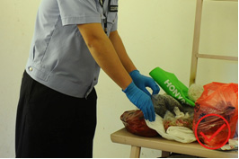

重点提示：
实施搜查行为的最终目的是为刑事诉讼提供证据，因此以执法规范来保障实施搜查的‘三个确保’。首先确保安全；不但要确保被搜查人、提取的证据的安全，还要确保搜查人员自身的安全；其次是确保搜查工作程序合法，发现证据的过程有效；最终是确保搜查提取保管的证据是原来面貌。
一、概论
(一)搜查是指公安机关为了收集犯罪证据、查获犯罪人，对犯罪嫌疑人以及可能隐藏罪犯或者犯罪证据的人的身体、物品、住处和其他有关的地方进行的搜索和检查。
搜查的理由是“可能”隐藏罪犯或犯罪证据，这种“可能”是根据已经取得的证据或获取的线索而作出的合理判断，不能主观臆断，更不能随意扩大范围。
(二)本章所讲的搜查主要是事先有准备的对住处、场所、车辆等地方进行搜查。对于日常巡逻、盘查过程中的临场搜查操作动作参照《杭州市公安机关设卡盘查规范》执行；对人身搜查的操作动作参照《杭州市公安机关人身安全检查标准操作程序》执行；搜捕犯罪嫌疑人的操作动作参照《杭州市公安机关抓捕操作程序》。
(三)整个搜查过程中要把安全放在首位，不但要确保被搜查人、提取的证据的安全，还要确保搜查人员自身的安全。
(四)强化搜查工作程序意识，严格依法规范操作，杜绝因程序违法而造成证据失效的情况发生。
(五)公安机关对与违法行为有关的场所进行的检查参照本章执行。
二、一般要求
(一)
搜查前的准备
1、搜查前，办案民警应当制作《呈请搜查报告书》，注明简要案情、搜查对象、搜查目的、法律依据等，经办案部门领导审核后，报县级以上公安机关负责人批准，开具《搜查证》。
在执行逮捕、拘留的时候，遇有下列紧急情况，不用《搜查证》也可以进行搜查，但应当在《搜查笔录》中注明：
（1）可能随身携带凶器的；
（2）可能隐藏爆炸、剧毒等危险物品的；
（3）可能隐匿、毁弃、转移犯罪证据的；
（4）可能隐匿其他犯罪嫌疑人的；
（5）其他突然发生的紧急情况。
2、准备好搜查所需要的装备器材，如照相摄影器材、照明设备、警戒带、物证袋等。现场在室外的，视情带上铁锹、绳子等工具及警犬。
3、根据搜查现场的复杂程度、搜查范围的大小、是否需要押送嫌疑人等情况，确定搜查警力，并进行合理分工。
4、参加搜查的警力须提前了解以下情况：
（1）简要案情、搜查目的、搜查重点；
（2）嫌疑人归案情况；
（3）搜查现场的环境、现场可能出现的情况。
5、嫌疑人已经被抓获的搜查工作，可视情将其带至搜查现场边搜边问，以提高搜查效率。
带嫌疑人至搜查现场的，应当严格遵循《杭州市公安机关押送标准操作程序》要求，防止其行凶、脱逃、自伤自残、被劫夺等情况发生。
6、必要时，通知技术勘查部门一起参与搜查。
7、邀请若干见证人，告知其应当始终在场见证整个搜查过程，并对搜查的情况予以保密。
(二)
见证人条件
1、见证人应年满18周岁、有完全行为能力。与本案有利害关系、担任过本案证人的公民不得担任见证人。
2、尽量选择热心、公道、正派的群众做见证人，也可以从当地人大代表或基层自治组织的人员中选取。当搜查工作出现意外时，这类人员可以协助警方开展积极、正面的工作。
3、被搜查人或其家属自行提供见证人的，只要符合法定条件且不致干扰搜查活动的，可以允许。
4、单位犯罪案件不能在该单位员工中选择见证人。
5、民警、协辅警不得担任见证人。
(三)
实施搜查
1、搜查人员要时刻保持警惕，注意自身安全，防止被搜查人或现场其他人员突然袭击。实施搜查前先封锁搜查现场，清退无关人员，必要时应设置警戒带和安排专人负责警戒。
设警戒带并由专人警戒
2、向被搜查人或家属出示《警察证》、《搜查证》，说明来意，要求其在《搜查证》上签注搜查时间并签名捺印。被搜查人或其家属拒绝签名的，民警应当在《搜查证》上注明。
向被搜查人出示《警察证》、《搜查证》
3、搜查遭到阻碍的，向阻碍人员说明妨碍公务应负的法律责任。经劝说无效的，将其控制或强行带离。
4、搜查过程尽量录音录像，其中涉外案件、危害国家安全案件、可能判处十年以上有期徒刑的案件、有舆情炒作或信访可能的案件、室内无人或被搜查人不配合的案件，以及其他敏感案件，必须全程录音录像。
5、根据现场情况确定搜查范围、顺序、重点，全面、细致地开展搜查工作。搜查时应做到：
（1）戴手套进行，防止破坏痕迹物证；

搜查时戴手套
禁止裸手搜查
（2）搜查过程中碰到可疑的橱柜、箱、包、袋等，先观察后打开，打开后由外至内逐件取出，不得直接伸手探摸或倾倒；遇有可疑的液体、血液不得直接触碰，防止皮肤沾染。
（3）搜查过程中发现某些已知的证据后，不能就此停止，应将整个现场彻底搜查完毕，以发现其他犯罪线索和证据。
（4）搜查过程中尽量避免采用破坏性的搜查方式，被翻动、移位的物品应尽量放回原位、恢复原状。如果采取破坏性方式搜查的，应当对破坏前后的情况进行拍照或录像。
6、搜查时发现犯罪嫌疑人的，立即实施抓捕。
(四)
物证的提取和保管
1、发现与案件有关的物证，应先拍照后提取。
发现物证先拍照固定
禁止先提取后拍照
2、提取物证时应轻拿轻放，避免损坏。
3、提取的物证（尤其是贵重金属、毒品）应放入一次性（即启封后不能复原）物证袋后当场封存并注明日期、来源、提取人等内容。
(五)
制作法律文书
1、在《扣押物品、文件清单》上逐一登记提取扣押的相关证物，详细记录物品的名称、数量、特征等。涉案的现金及其他有价凭证等应当面清点，注明数额。
涉案物品的属性不能确定时，在《扣押物品、文件清单》上详细注明形状和外观特征，有条件的可在现场称重（例如疑似毒品、疑似黄金饰品，不得直接用“海洛因一包，黄金戒指一枚”直接称谓涉案物品，应当用“白色粉末一包、黄色金属戒指一枚”来记录，并在备注栏注明“成分、性质待检验”）。
扣押物品、文件清单
|
编号 |
名称 |
数量 |
特征 |
备注 |
|
1 |
粉末 |
壹包 |
白色粉末，连透明塑料袋重6克 |
成分、性质待检验 |
|
2 |
项链 |
壹条 |
黄颜色金属，水波纹，重12克 |
成分、性质待检验 |
2、搜查结束后制作《搜查笔录》，记录以下内容：
（1）本次搜查的范围；
（2）在什么部位发现了什么物品或痕迹物证，物品、痕迹物证的名称、数量、特征、状态等，对哪些进行了扣押、提取；
（3）搜查中现场物品有无损坏及损坏情况；
（4）被搜查人或其家属是否配合；
（5）根据案情和搜查情况，需要记录的其他内容。
3、将《搜查笔录》、《扣押物品、文件清单》交被搜查人或者其家属签名并捺印，如果被搜查人或其家属不在现场或者拒绝签名、捺印的，应在笔录上注明。参加搜查的民警、见证人一并在文书上签名。
4、将《搜查证》、《搜查笔录》、《扣押物品、文件清单》以及搜查中拍摄的照片、录像等归档附卷。
三、室内搜查
(一)搜查前视情向邻居、物业等人员了解室内结构、居住人员等情况（如有哪些同户人员，有无异常人员进出，有无新来的外来人员）。
(二)室内人员拒绝开门、室内无人且无法联系上或虽联系上但不能及时到场的，民警可强行进入。
需要强行进入的，尽量选择非破坏性或破坏性较小的方式，如技术开锁、翻墙爬窗等。采取破坏门窗方式进入的，待搜查结束后予以加固，并对破损前后及加固的情况进行拍照或录像。
(三)进入室内后逐一核查室内人员身份，若室内人员较多时应加强警戒，并针对不同情形分别采取以下措施：
1、如果是犯罪嫌疑人的，应立即控制并搜身；
2、如果是被搜查人员的同户人员，可允许其留在现场。但如果同户人员是未成年人的，应带离搜查地点，并由民警或家属陪同，以保护其身心健康；
3、如果是知悉案件事实的人员，另行选择地点进行调查询问;
4、如果是其他无关人员，劝离现场。
(四)搜查前,应布置警戒力量,封锁搜查现场或关闭房屋大门，告知留在室内的人员待在指定位置（应使其远离刀具、棍棒等危险物品），不得随意走动。同时，民警应加强警戒，防止其干扰搜查或实施袭击行为。
(五)整个搜查过程须在被搜查人或其家属、见证人共同的视线范围内进行。如果被搜查人或其家属、见证人有一方仅有一人且有多个房间要搜查时，民警只能逐个房间搜查，不得同时在不同房间分头搜查。
应当在被搜查人和见证人
禁止仅在被搜查人或见证人
共同视线内进行
一方视线内进行
(六)搜查一般应从最可能发现目标物的部位开始。难以确定重点部位的，先确定搜查方向，进行地毯式搜查。搜查时应做到：
1、留意暗抽屉、家具夹层、吊顶、画框背后、书本夹页等隐秘部位;
2、特别注意与原来状况发生细微变化的物体或部位；
3、观察被搜查人或家属的神态变化，当搜查至某处其神情有变化时，应重点搜查。
四、室外搜查
(一)根据搜查范围的大小及难易程度，组织相应数量的警力，携带必要的搜查装备器材，如金属探测仪、水泵、铁锹等。
(二)如有需要，可带犯罪嫌疑人或者相关知情人员到现场指认，确定搜查范围，也可带警犬协助搜查。
(三)全面观察现场环境，根据案件情况和具体的地形、地貌实际，划定搜查范围。
(四)夜间搜查的，外围应放置发光或反光警示标志。
(五)对面积较大的地方进行搜查时，可以将搜查区域分割成若干区块，分块进行搜查；还可用杆、旗引导搜索方向，宁重复勿遗漏。
(六)搜查时应当留意新翻动的地面、新变动的堆物和新移动的物品。
(七)对水域搜查，应先熟悉水文情况，不得贸然下水。水域面积大或水文情况复杂的，可商请专业打捞人员参与。
五、机动车辆搜查
(一)搜查前应将人、车分离，布置好警戒力量。责令司乘人员下车时，要密切关注其手部动作，防止其突然从座位底下、收纳盒等处拿出凶器袭击民警。
搜查时人车分离
禁止搜查时人和车未分离
(二)无法打开车门时，可请锁匠或4S店的专业人员开锁，减少对车辆的损坏。
(三)搜查车辆一般应按照“车辆周边→车身外部→车辆内部”的顺序逐一进行。
(四)车辆内部搜查一般遵循从前到后的顺序，尤其要注意驾驶盘的底座、配电盘盖子、收音机开关、地胶板底下、座位夹缝、车门把手以及车窗、后视镜、工具箱、备胎等重点部位。
搜查重点部位
(五)注意观察车辆是否有特殊的结构，哪些是原有的,哪些是改装的，并分析改装的用途是什么，从中发现疑点（例如有无另加油箱、水箱，油箱、水箱内是否正常加入油或水，油箱、水箱内有无暗格或藏放他物；车辆底部有无不正常焊点，是否有暗格等）。
(六)搜查应结合已了解掌握的犯罪种类，决定搜查的重点部位（例如交通肇事逃逸案，车轮、车辆的底架等可能有毛发或人体纤维组织；走私贩卖毒品案中，车辆的暗格或车胎内藏放毒品的可能性较大等）。